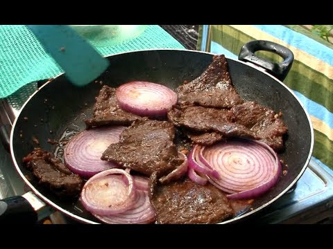

FILIPINO FOOD RECIPES


-- Bulalo Kare-Kare --
• 3 lbs beef shank bulalo
• 1 piece Knorr Beef Cube
• 1 cup roasted peanuts
• 15 pieces sitaw
• 1 piece eggplant
• 1 bunch bok choy
• 1/2 cup annatto seeds
• 8 cloves garlic
• 1 ½ pints water
• 2 teaspoons cornstarch
• 1/4 cup water
• ground black pepper to taste
• 1/2 cup bagoong alamang
• 3 tablespoons cooking oil
-- Kare-Kare --
•2 lbs. beef tripe sliced
•1 piece Knorr Beef Cube
•1 bunch baby bok choy
•15 pieces snake beans
•1 piece Chinese eggplant
•1 ½ cup peanut
•½ cup annatto seeds
•1 piece onion
•5 cloves garlic
•1 ½ tablespoons glutinous rice flour
•6 cups water
-- Red Wine Beef Stew --
•2 lbs. beef chuck cubed
•1 ½ cup red wine
•3 cups beef broth
•4 strips bacon chopped
•15 pieces pearl onion
•3 ounces tomato paste
•1 piece carrot
•5 sprigs thyme
•1 piece onion
•6 cloves garlic
•Salt and pepper to taste
-- Saucy Beef with Broccoli --
•1 ½ lbs. beef sirloin
•3 tablespoons soy sauce
•3 tablespoons cooking wine
•4 tablespoons oyster sauce
•2 tablespoons cornstarch
•2 cups broccoli florets
•2 thumbs ginger
•1 piece onion
•1 ½ cup beef broth
•3 tablespoons cooking oil
•Salt and pepper to taste
-- Beef Steak --
•1 lemon, juiced
•3 tablespoons soy sauce
• 1 teaspoon white sugar
• salt and pepper to taste
• 4 pounds New York strip steak
• 1 tablespoon cornstarch
• ¼ cup vegetable oil
• 3 tablespoons olive oil
• 1 onion
• 2 cloves garlic